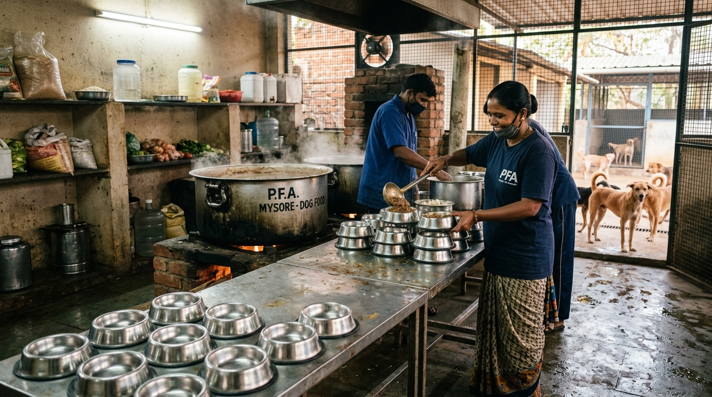

At 5:00 AM every morning, while the city of Mysore is still asleep, the kitchen hearth at Dogs Protection Trust roars to life. Massive 100-liter stainless steel cauldrons are filled with fresh mountain water, mountain grains, poultry cuts, root vegetables, and therapeutic herbs. Feeding over 400 dogs—including 100+ shelter resident rescues, post-operative patients, and hundreds of street pack animals across multiple city routes—is a monumental daily logistical undertaking.
Good nutrition is not merely about preventing starvation; it is the cornerstone of clinical medicine. A dog receiving wholesome protein, vital fatty acids, and balanced micronutrients heals surgical incisions twice as fast, generates robust antibody titers following vaccination, and develops resilient immunity against tick fever and skin infections. In this comprehensive master guide, we take you inside our 365-day kitchen operations, breakdown our veterinary nutrition recipes, and explain how our feeding drives keep Mysore's communities peaceful.
1. Sourcing Fresh, Human-Grade Ingredients Daily
Unlike commercial animal feeds that frequently utilize low-grade animal byproducts and artificial preservatives, Dogs Protection Trust prepares 100% human-grade, fresh home-cooked meals. Every ingredient is sourced fresh every morning from local Mysore agricultural markets and licensed butchers:
- Fresh Poultry Cuts & Offal (60-70 kg daily): High-protein minced chicken, liver, and rich bone marrow broth providing essential amino acids (arginine, lysine, taurine) necessary for cellular tissue repair.
- Polished Sonamasuri & Broken Rice (50 kg daily): Easily digestible carbohydrate source providing steady energy without gastrointestinal irritation.
- Fresh Farm Eggs (150+ eggs daily): Hard-boiled and crushed with shells to provide bioavailable albumin protein and essential natural calcium for bone healing.
- Root Vegetables & Pumpkin (20 kg daily): Steamed carrots, bottle gourd, and yellow pumpkin supplying soluble dietary fiber that regulates bowel motility and prevents constipation.
- Pure Golden Haldi (Turmeric) & Virgin Coconut Oil: Natural anti-inflammatory agents containing Curcumin, which soothe arthritic joints and promote lustrous skin coats.
2. The DPT Master Canine Stew Recipe & Cooking Process
Preparing 400+ liters of balanced stew requires strict hygienic protocols and a standardized 3-hour cooking sequence:
The 4-Stage Cooking Workflow
- Stage 1: Deep Mineral Bone Broth Extraction (5:30 AM - 6:30 AM): Chicken cuts, cartilage, and bone marrow are simmered under pressure for 60 minutes with turmeric to extract natural collagen, glucosamine, and chondroitin into the liquid broth.
- Stage 2: Grain & Vegetable Infusion (6:30 AM - 7:30 AM): Washed rice and finely diced carrots and pumpkin are added directly to the boiling broth, absorbing 100% of the nutrient-dense poultry juices.
- Stage 3: Mineral & Vitamin Fortification (7:30 AM - 8:00 AM): Once the heat is turned off and the stew cools to 45°C, veterinary-grade multivitamin syrups, dicalcium phosphate, and Omega-3 fish oil are mixed in (preventing heat degradation of sensitive vitamins).
- Stage 4: Portioning & Temperature Control (8:00 AM - 8:30 AM): Food is portioned into individualized stainless steel feeding bowls for shelter residents and insulated heavy-duty buckets for our mobile street feeding vans.
3. Specialized Diets for Vulnerable Shelter Populations
| Canine Group | Special Dietary Modification | Nutritional Objective |
|---|---|---|
| Weaned Orphan Puppies | Pureed chicken liver, goat milk formula, baby cereal mash | Rapid growth, brain development & strong bone mineralization |
| Post-Surgical / Trauma | Double egg albumin, high-calorie bone broth, liver paste | Accelerate surgical wound healing and red blood cell production |
| Geriatric / Senior Dogs | Soft rice porridge, steamed pureed pumpkin, extra turmeric & coconut oil | Gentle on missing teeth and anti-inflammatory joint support |
| Parvovirus Recovery Dogs | Sterile rice water, electrolytes, boiled pure chicken puree | Gentle reintroduction of nutrients to damaged gut villi |
4. Seasonal Nutritional Adjustments: Summer Hydration vs. Monsoon Immunity
Mysore experiences distinct climatic seasons, requiring tailored nutritional adjustments to maintain optimal canine metabolic health throughout the year:
Summer Feeding Protocol (March - May)
During peak heat when street dogs face lethal heat exhaustion and dehydration, our kitchen introduces hydrating, cooling ingredients:
- Electrolyte-Infused Curd & Buttermilk (Chaas): Fresh probiotic yogurt thinned with water and a pinch of rock salt helps maintain fluid-electrolyte balance and soothe gastrointestinal heat stress.
- Watermelon & Cucumber Hydration Slices: Seedless, crisp fruit snacks provided during midday shaded resting hours.
- Early Morning & Night Feeding: Shifting feeding hours to 5:30 AM and 8:30 PM to prevent dogs from eating during peak ambient heat.
Monsoon & Winter Nutrition Protocol (June - January)
Wet, chilly conditions increase canine calorie burn and expose dogs to fungal and respiratory pathogens:
- Calorie-Dense Animal Fat Infusion: Adding extra poultry fat, liver tallow, and cold-pressed coconut oil to supply dense energy for thermoregulation.
- Golden Immunity Broth (Turmeric & Ginger): Simmering fresh crushed ginger and high-curcumin turmeric in bone broths to provide antimicrobial respiratory support.
5. The Calcium-Phosphorus (Ca:P) Balance in Canine Diets
A frequent error in amateur home-cooked dog diets is feeding exclusively boneless meat. Muscle meat is naturally high in phosphorus and extremely low in calcium (Ca:P ratio of 1:20), which can cause nutritional secondary hyperparathyroidism and brittle bone fractures. At DPT, our recipes maintain a scientifically balanced 1.2:1 to 1.4:1 Calcium-to-Phosphorus ratio through the inclusion of sterilized crushed eggshell powder (providing bioavailable calcium carbonate) and pharmaceutical dicalcium phosphate.
6. The Street Feeding Routes: Preventing Community Conflict
Hungry street dogs are naturally anxious and competitive. When street dogs are starved, pack aggression increases, leading to territorial fights and human garbage scavenging. When street dogs are systematically fed on a predictable daily schedule, they become calm, friendly, and protective of their neighborhoods.
Every evening at 6:00 PM, our feeding van departs on structured routes through industrial areas, temple perimeters, vegetable markets, and highway circles across Mysore. Over 300 street dogs eagerly await our arrival, receiving their hot meal and clean drinking water.
7. The Mysore Community Clean Water Bowl Project
Dehydration is a leading silent killer of urban street dogs during the dry months from February to June. Street dogs often resort to drinking toxic, chemical-laden stagnant drain runoff when clean water is unavailable. Alongside our hot food distribution, Dogs Protection Trust manufactures and distributes heavy cement water bowls to shopkeepers, apartment security gates, and volunteer homes across Mysore:
- Algae-Resistant White Lime Coating: Coated with natural slaked lime (chuna) which naturally discourages bacterial and algal growth in standing water.
- Heavy Anti-Tip Base (15 kg): Specially weighted so passing cattle or playful dogs cannot tip the bowl over.
- Daily Refill Guardianship: Partnering with local tea stalls and residential watchmen who commit to scrubbing and refilling the bowl twice daily with fresh tap water.
8. How to Volunteer in the DPT Kitchen
Every Saturday and Sunday, animal lovers and student groups join our shelter morning kitchen shift from 6:00 AM to 9:00 AM. Volunteers help chop fresh vegetables, peel boiled eggs, portion feeding trays, and join our rescue drivers on mobile distribution routes. It is an unforgettable, hands-on experience of compassion in action!
9. The Monthly Cost of Feeding 400+ Dogs
Feeding 400+ animals every single day requires over 1,500 kg of rice, 1,800 kg of fresh chicken, 4,500 farm eggs, and 600 kg of vegetables monthly, costing approximately ₹1,20,000 per month.
Every ₹100 donated buys a full day's fresh meals for a rescued dog. Every ₹3,000 sponsors an entire feeding route for one evening!
Written by DPT Nutrition & Kitchen Staff
Dedicated to cooking and serving 400+ fresh, wholesome, high-protein meals 365 days a year at Dogs Protection Trust Mysore.
6. Procuring Fresh Wholesome Ingredients Across Mysore Wholesale Markets
Cooking more than 400 nutritious, balanced meals every single day requires a meticulously organized logistical supply chain. Before sunrise every morning, our kitchen procurement van visits trusted local grain mills and wholesale poultry suppliers across Mysore's Mandi Mohalla and Bandipalya wholesale markets. We source over 50 kilograms of fresh, human-grade whole chicken cuts, clean broken rice, fresh carrots, pumpkin, eggs, and organic turmeric powder.
Inside our commercial stainless-steel shelter kitchen, three massive 100-liter culinary cauldrons simmer fresh turmeric chicken broth over clean, controlled cooking burners. Strict sanitary standards are observed: all vegetables are ozone-washed to eliminate residual pesticides, cutting stations are sterilized between batches, and food temperatures are tested before serving to ensure optimal warmth without risking oral burns to eager canine eaters.
7. Calculating Caloric Demands Across Different Rehabilitation Profiles
Tailoring Daily Canine Portions for Optimal Recovery
Every resident dog at DPT receives a customized meal portion calculated according to their veterinary stage:
- Post-Surgical Accident Patients: High-protein, amino-acid enriched chicken stew (35% crude protein) fortified with Zinc and Vitamin C to accelerate wound granulation and bone remodeling.
- Lactating Mothers & Growing Puppies: Nutrient-dense meals mixed with organic calcium carbonate, egg yolks, and whole milk curd fed in 4 daily portions to sustain high metabolic demands.
- Senior Sanctuary Residents: Easily digestible soft rice broth enriched with pureed pumpkin fiber and digestive enzymes to maintain optimal intestinal motility without taxing aged kidneys.
10. Complete Donation Transparency & Community Impact in Mysore
At Dogs Protection Trust, every single rupee received from compassionate animal lovers is directed straight into animal feed, sterile surgical equipment, life-saving medicines, and shelter utilities. We maintain transparent financial books, publish regular video and photo updates of our patients, and welcome community members to visit our sanctuary in Mysore to see their generous support in action. You can donate directly via UPI to 9108021554@sbi or support our ongoing veterinary and nutrition funds to help us rescue, heal, and protect hundreds more street canines every year.